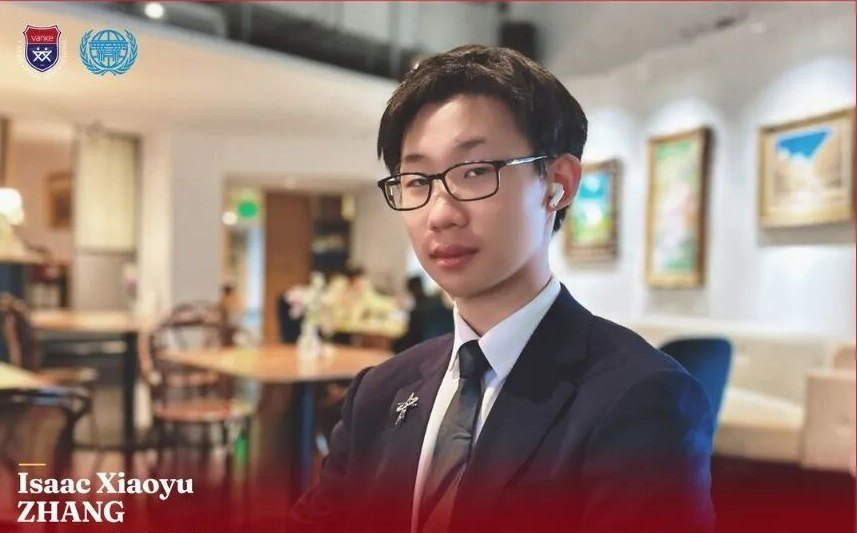
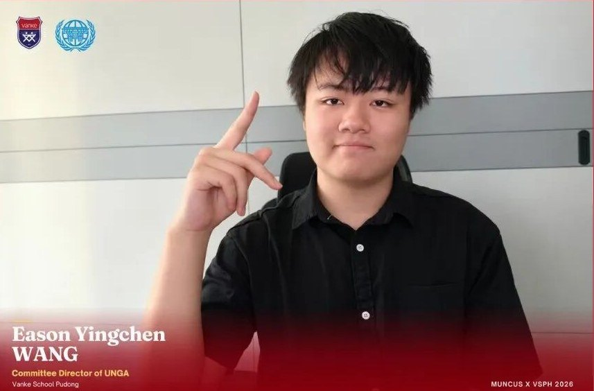
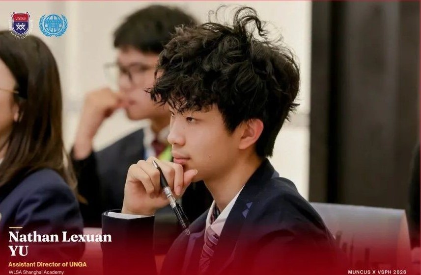
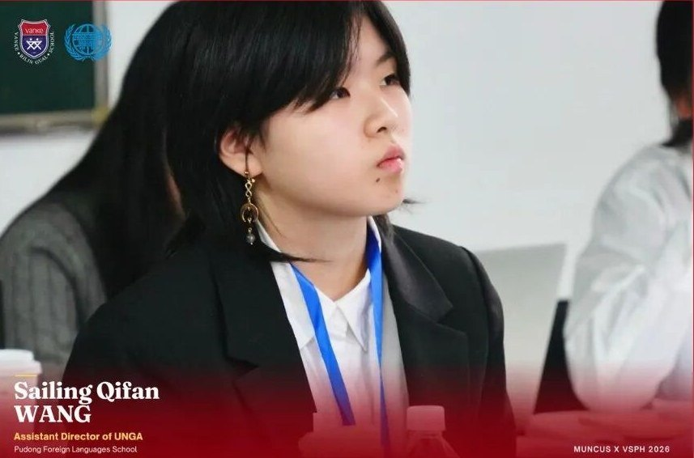
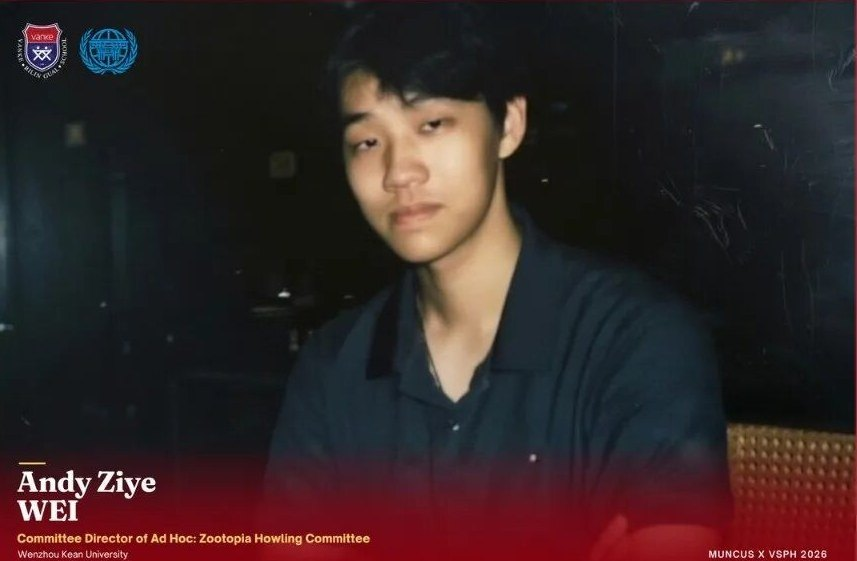
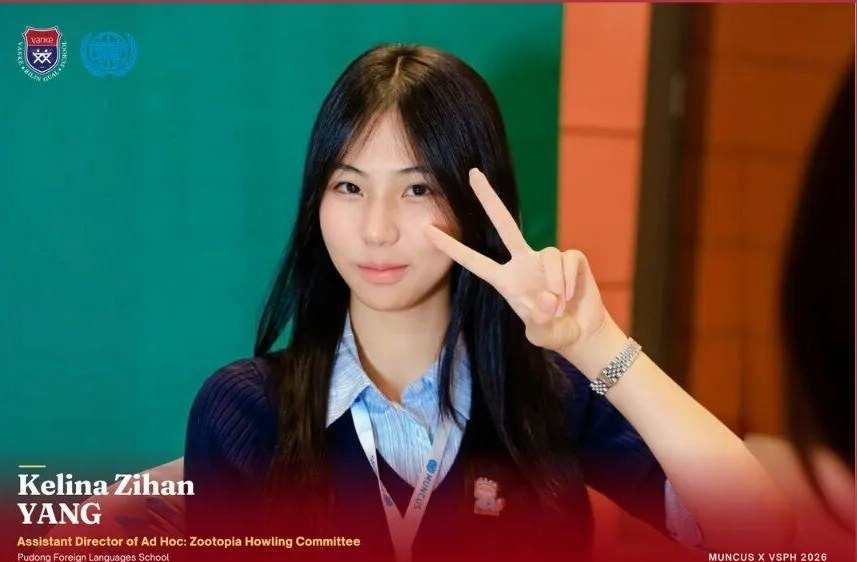
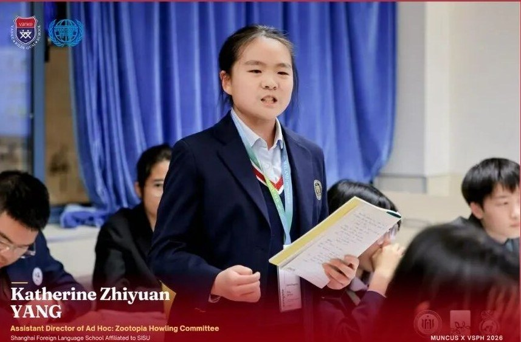

With MUNCUS x VSPH 2026 just days away, we are proud to introduce the dais teams who will lead this year's three committees at Vanke School Pudong from October 4 to 6.
Dais Team
Soviet Union General Commissariat (USSRGC)

United Nations General Assembly (UNGA)



Ad Hoc: Zootopia Howling Committee



Conference Location

Vanke School Pudong 上海浦东新区民办万科学校
No. 2-4, Lane 1700, Kangqiao Road, Pudong New Area, Shanghai
上海市浦东新区康桥路1700弄2-4号
Conference Schedule
October 4 Day 1
- Conference Registration09:00 – 11:00
- Lunch Break11:00 – 13:00
- Opening Ceremony13:00 – 14:00
- Committee Session 114:00 – 17:00
- Dinner Break17:00 – 19:00
- Committee Session 219:00 – 21:00
October 5 Day 2
- Delegate Workshop09:00 – 11:00
- Lunch Break11:00 – 13:00
- Committee Session 313:00 – 17:00
- Dinner Break17:00 – 19:00
- Gala Night19:00 – 21:00
October 6 Day 3
- Committee Session 409:00 – 11:00
- Lunch Break11:00 – 13:00
- Committee Session 513:00 – 16:00
- Closing Ceremony & Awards16:00 – 17:00
- Delegate See-offAfter 17:00
Conference Affairs
Conference and Document Services 会议及文件服务
The Secretariat is responsible for providing various services to the committees and their delegates, including but not limited to:
- Conference planning and scheduling
- Meeting room services
- Interpretation
- Document and publication services, including editing, translation, text processing and desktop publishing, printing, distribution, and official written meeting minutes
Use of Electronic Devices and Cameras 电子设备和照相机的使用
During formal debates, delegates are generally not permitted to use electronic devices, unless otherwise specified by the committee chair. When taking photographs or videos in the venue, care should be taken to avoid capturing others without their consent, or to obtain consent in advance.
Dress Code 着装要求
To foster a professional and memorable conference environment, delegates are required to wear formal attire for all sessions. The Secretariat and committees may address cases of non-compliance with the dress code as appropriate.
About MUNCUS
上海模拟联合国社团联盟（MUNCUS）致力于连接上海地区模联社团，搭建资源共享与交流平台，为更多青少年提供与世界交流的机会。
The Model United Nations Club Union of Shanghai connects MUN clubs across Shanghai, building a platform for sharing resources and exchange, and giving more young people the chance to engage with the world.
To inspire the next generation.
Originally published on the MUNCUS WeChat official account. Read on WeChat →